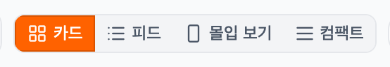
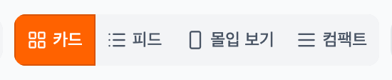
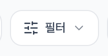
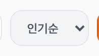
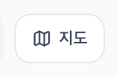
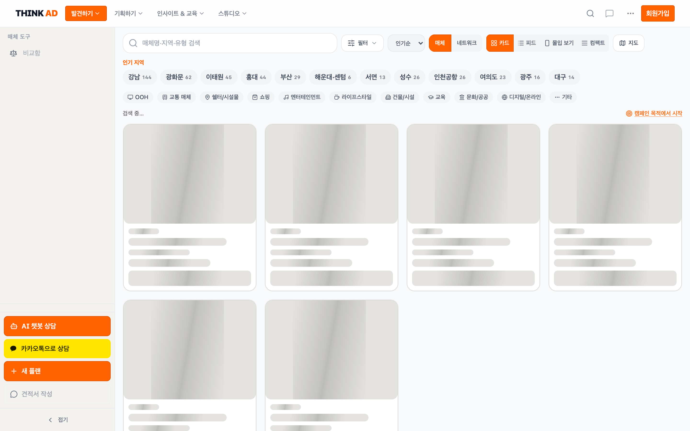

Desktop filterbar unify — before / after
Viewport 1440×900 · /ko/media · heights in px · target TOOLBAR_CTRL_H = 36
| Control | Before | After | Δ |
|---|
| 필터 | 30.5 | 36 | +5.5 |
| 정렬 | 31.0 | 36 | +5.0 |
| 매체·네트워크 래퍼 | 36.0 | 36 | 0 |
| 매체/네트워크 버튼 | 34.0 | 36 | +2.0 |
| 뷰모드 버튼 | 26.5 | 36 | +9.5 |
| 지도 | 30.5 | 36 | +5.5 |
| 스프레드 | 9.5 | 0 | unified |
Before — view mode (26.5px)

After — view mode (36px)

After — filter (36px)

After — segment (36px)
After — sort (36px)

After — map (36px)

After — full toolbar
